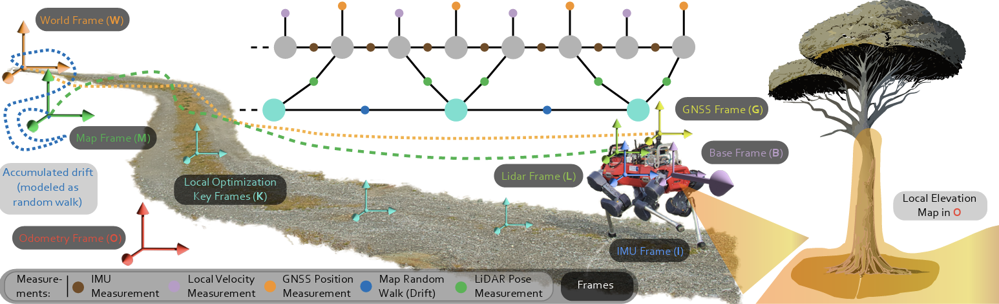
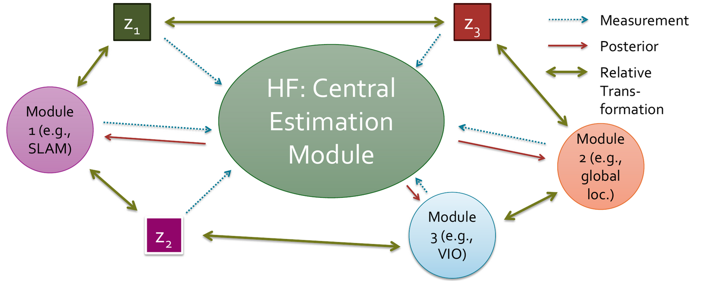
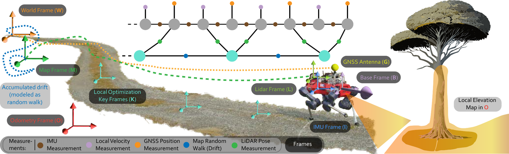
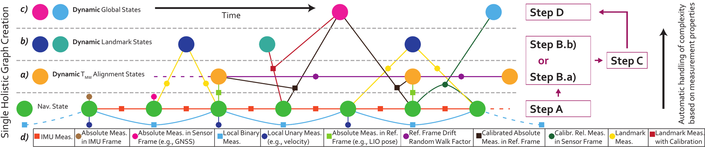
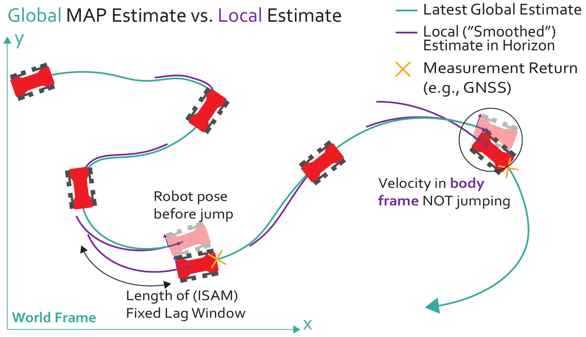
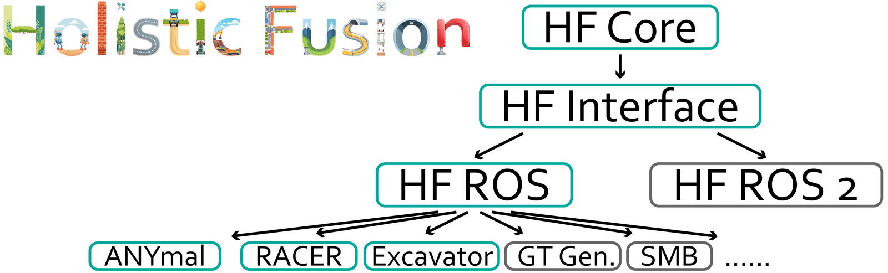
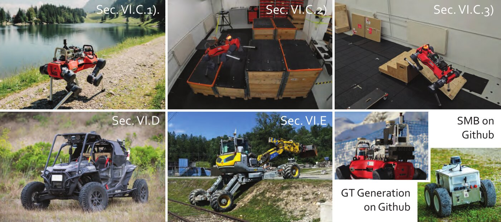
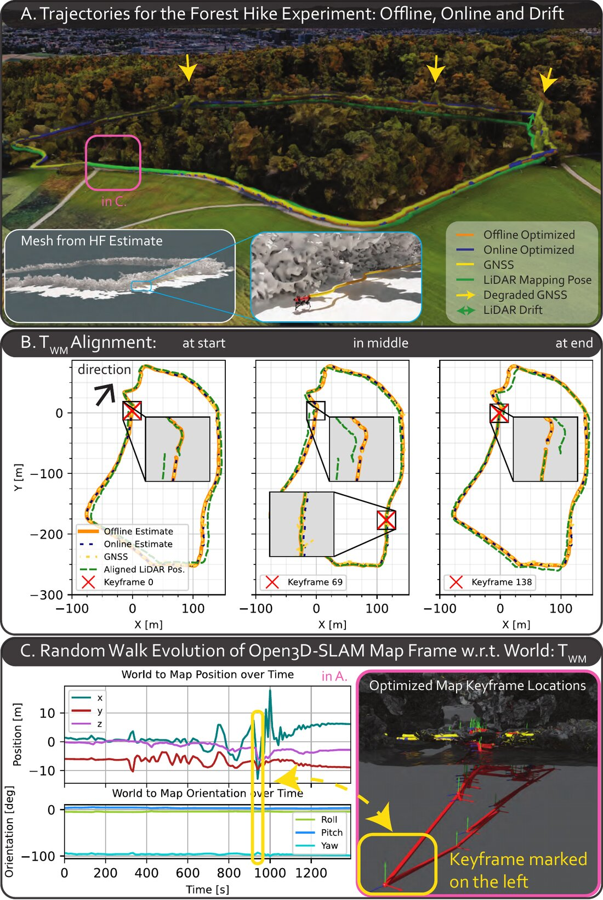
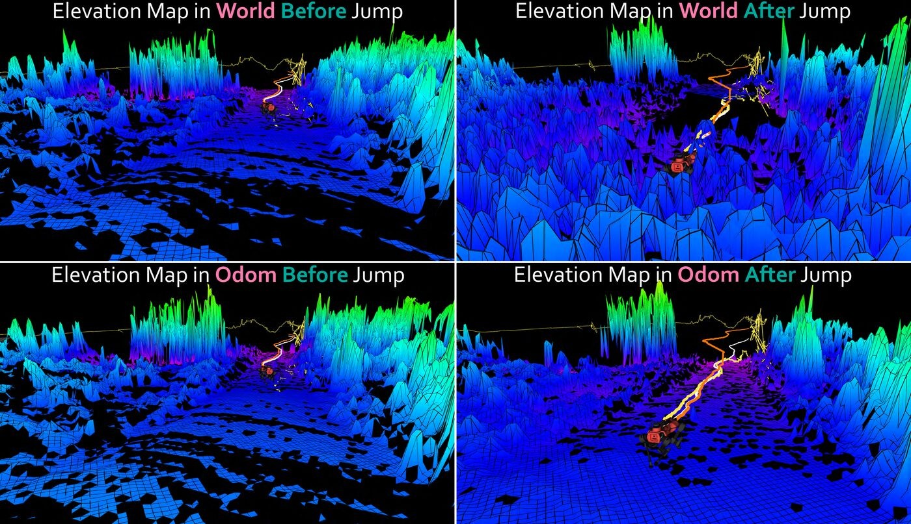

A short overview of the approach and the real-world deployments on the ANYmal quadruped, the RACER off-road vehicle, and the HEAP walking excavator.
Seamless operation of mobile robots in challenging environments requires low-latency local motion estimation and accurate global localization. While most sensor-fusion approaches are designed for specific scenarios, this work introduces a flexible open-source solution for task- and setup-agnostic multimodal sensor fusion distinguished by its generality and usability. Holistic Fusion formulates sensor fusion as a combined estimation problem of i) the local and global robot state and ii) a (theoretically unlimited) number of dynamic variables, including automatic alignment of reference frames; this formulation fits countless real-world applications without conceptual modifications, offering a comprehensive solution beyond hard-coded/task-specific approaches. The proposed factor-graph formulation enables direct fusion of an arbitrary number of absolute, local, and landmark measurements expressed with respect to different frames by explicitly including them as states in the optimization and modeling their evolution as random walks. Moreover, local smoothness and consistency receive particular attention to prevent estimation jumps. Holistic Fusion enables low-latency and smooth online state estimation on typical robot hardware while simultaneously providing low-drift global localization at the IMU measurement rate. The efficacy of this released framework is demonstrated in five real-world scenarios on three robotic platforms with distinct task requirements, highlighting the advantages of fusing multiple absolute measurement types.
HF acts as the central state-estimation module of a robot. Beyond the robot state, it estimates the relationship between all reference frames of the fused measurements and external modules, and it feeds high-rate beliefs back to them.


Compared to existing sensor-fusion formulations, the state vector of HF is not fixed. Dynamic context variables are allocated as needed, and part of the logic that is usually hard-coded is offloaded to the optimization.
Next to the IMU-rate robot navigation states, HF dynamically creates reference-frame alignment states, landmark states, and global (e.g., calibration) states and optimizes all of them jointly.
A single rigid (Umeyama) alignment cannot capture the drift between frames. HF models the evolution of each reference-frame transformation as a multivariate discrete-time random walk on SE(3), added as a zero-mean between factor.
Alignment variables are parametrized around local keyframes instead of the global origin. This removes the growing rotational lever arm and makes automatic alignment numerically stable over long missions.
New information (e.g., returning GNSS) may jump the world-frame belief. HF integrates the body-frame velocity from the smoother window to provide a smooth odometry-frame estimate for control and local mapping.
IMU-based propagation runs at full rate while a fixed-lag iSAM2 smoother optimizes asynchronously. Dense states allow delayed and out-of-order measurements to be inserted without rewiring the graph.
The offline graph mirrors the online one and is initialized from the online belief, converging in few iterations. It yields IMU-rate optimized trajectories usable as post-mission pseudo ground truth.

Four categories cover most practical robotic state-estimation problems, including non-gravity-aligned and drifting measurements expressed in arbitrary sensor frames with respect to arbitrary reference frames.

HF is released as a documented C++ framework with main dependencies on GTSAM and Eigen. The core is independent of any middleware; ROS 1 and ROS 2 wrappers and a set of robot examples are provided.

graph_msf: middleware-independent C++ library. New measurement types are added by implementing a small interface; Jacobians come from GTSAM expression factors.
graph_msf_ros and graph_msf_ros2 provide callbacks, logging, visualization, TF handling, and message advertisement.
Ready-to-run estimators for several platforms, evaluated in the paper or used in teaching and ground-truth generation.
Get started with the installation guide, the system overview, and the parameter reference.
HF is the default localization and state-estimation solution on all evaluated platforms. Its suitability is demonstrated in five real-world scenarios on three robots with different sensor suites, motions, and environments.

| Platform | Sensors (all: IMU, LiDAR) | Motions | Environments |
|---|---|---|---|
| ANYmal quadrupedal robot |
Leg odometry, single GNSS antenna | Dynamic, vertical (climbing), high-acceleration stomping, multi-contact, leg slip, long distances | Indoors and outdoors, mixed |
| RACER off-road vehicle |
Three LiDARs, RADAR, GNSS, single wheel encoder | Highly dynamic, wheel slip, unpaved ground, few geometric features | Outdoors |
| HEAP walking excavator |
Two GNSS antennas | Multi-hour operation, tracking and control in the world frame | Outdoors, covered by building structures |


The recorded data used for the ANYmal and HEAP examples is publicly available. Combined with the provided replay launch files, the estimators can be run on the recordings out of the box.
Quadrupedal robot recordings with IMU, GNSS, leg odometry, and LiDAR, corresponding to the anymal_estimator_graph example.
Walking-excavator recordings with IMU, dual GNSS, and LiDAR, corresponding to the excavator_holistic_graph example.
If you find this work or the code useful, please consider citing the following publications.
@article{nubert2026holistic,
title = {Holistic Fusion: Task- and Setup-Agnostic Robot Localization and State Estimation with Factor Graphs},
author = {Nubert, Julian and Tuna, Turcan and Frey, Jonas and Cadena, Cesar and Kuchenbecker, Katherine J. and Khattak, Shehryar and Hutter, Marco},
journal = {IEEE Transactions on Robotics},
year = {2026},
publisher = {IEEE},
doi = {10.1109/TRO.2026.3714645}
}
@inproceedings{nubert2022graph,
title = {Graph-based Multi-sensor Fusion for Consistent Localization of Autonomous Construction Robots},
author = {Nubert, Julian and Khattak, Shehryar and Hutter, Marco},
booktitle = {IEEE International Conference on Robotics and Automation (ICRA)},
year = {2022},
organization = {IEEE}
}
Robotic Systems Lab, ETH Zürich · Max Planck Institute for Intelligent Systems · NASA Jet Propulsion Laboratory
Corresponding author: Julian Nubert, nubertj@gmail.com
The authors thank their colleagues at ETH Zürich and NASA JPL for help conducting the robot experiments and evaluations and for using GMSF and HF on their robots. Special thanks go to Takahiro Miki and the ANYmal Hike team at RSL; Nikita Rudin and David Hoeller for the ANYmal Parkour experiments; Patrick Spieler for running the deployments on the JPL RACER vehicle; the entire HEAP team at RSL and Gravis Robotics; Thomas Mantel and the teaching assistants of the ETH Robotic Summer School for their help on the SuperMegaBots; and Mayank Mittal for help generating the renderings.
This work is supported in part by the Sony Research Grant 2023, the EU Horizon 2020 programme grant agreements No. 852044, 101016970, and 101070405, EU Horizon 2021 programme grant agreement No. 101070596, the ETH Zurich Research Grant No. 21-1 ETH-27, the Swiss National Science Foundation (SNSF) through project No. 227617, the NCCR Digital Fabrication, and the Max Planck ETH Center for Learning Systems. This research was partially conducted at the Jet Propulsion Laboratory, California Institute of Technology, under a contract with the National Aeronautics and Space Administration (80NM0018D0004). This work was partially supported by the Defense Advanced Research Projects Agency (DARPA).